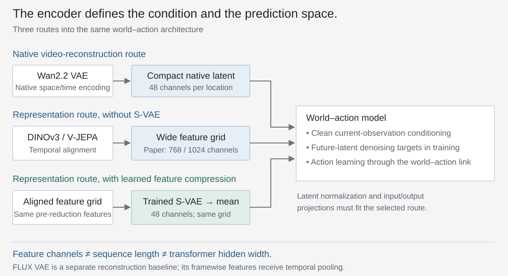
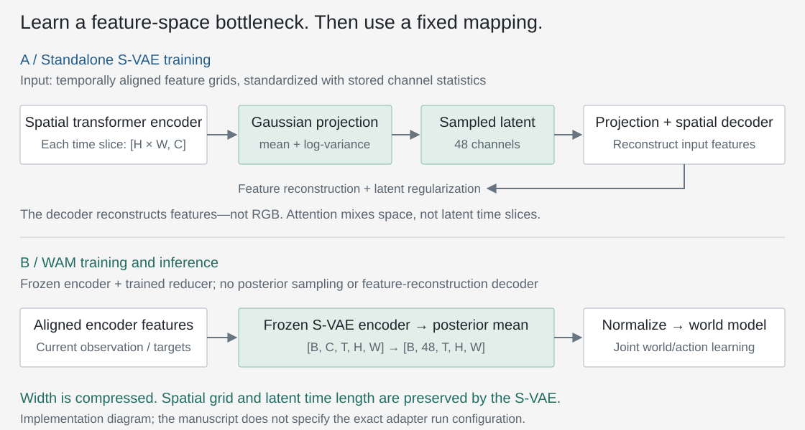
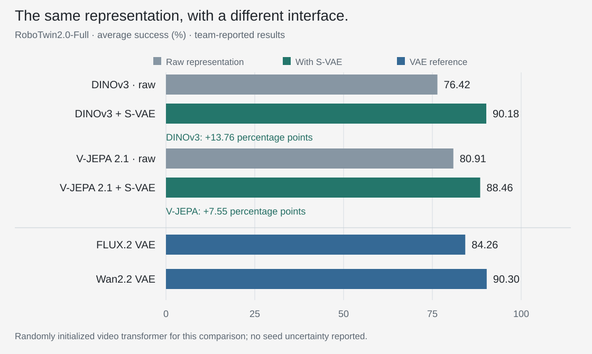

01 / The question
Changing the encoder changes the learning problem.
In the architecture study, the question was how the world and action streams should communicate. Here the question moves one step upstream: what should the world stream represent and predict?
A variational autoencoder (VAE) provides a compact representation from which its decoder can reconstruct images or video. A representation encoder such as DINOv3 or V-JEPA learns features through visual self-supervision. Those features need not come with a pixel decoder. Neither objective, by itself, guarantees the best action policy.
This is more than replacing the policy’s image-conditioning network. The encoder also defines the future-feature targets used to train the world stream. Their content, temporal organization, channel count and numerical scale all affect the problem the diffusion transformer must learn.

The hypothesis: useful visual features may need a more suitable interface before their value becomes visible in policy learning. A weak direct-swap result is not yet evidence that those features are intrinsically unsuitable.
02 / Experimental design
Do not give one representation its pretrained partner.
A pretrained video transformer has already learned to denoise the latents of its original VAE. Keeping those weights for the native route while replacing its representation elsewhere would mix two questions: the quality of the encoder and the benefit of a matched pretrained video model.
For this comparison, OpenWAM retains the Wan2.2-TI2V-5B video-transformer architecture but randomly initializes its weights. The visual encoders retain their learned representations. In the inspected implementation, the visual-encoder path is frozen during WAM training, and the optional S-VAE is trained separately before being attached and frozen.
| Component | Treatment | Why it matters |
|---|---|---|
| Video transformer | Same architecture; random initialization | Removes inherited Wan denoising weights as an advantage for its native latent space. |
| Visual encoder | Wan VAE, FLUX VAE, DINOv3 or V-JEPA | The learned representation is the comparison, not an all-random model. |
| Latent time layout | Match a first observation plus one target group per four later frames | Controls temporal output length; learned compression and averaging still differ. |
| Feature width | Raw representation or S-VAE-reduced 48 channels | Changes prediction-space dimensionality; not the transformer’s hidden width. |
| Evaluation | RoboTwin2.0-Full | Clean and randomized scenes are both present in training; this is not the later unseen-scene transfer protocol. |
“Same architecture” does not mean identical total parameters or compute. The input/output projections must fit each latent width, the encoders differ, and the S-VAE adds a separately trained component. The figure is not a compute-matched encoder leaderboard.
Temporal alignment is also an information boundary.
The first frame is available when the robot acts; the future frames are training targets. Averaging frame 0 together with future frames would contaminate the condition. The DINO/FLUX wrappers therefore keep frame 0 intact, then average features from frames 1–4, 5–8, and so on. A nine-frame clip becomes three latent time slices: one observation and two target groups.
PyTorch · keep the observation separate when pooling time
def pool_frame_features(x):
"""DINO/FLUX-style grid [B, C, T, H, W]; preserve observation frame 0."""
b, c, t, h, w = x.shape
if t < 1 or (t - 1) % 4:
raise ValueError("Expected T = 1 + 4k frames.")
first = x[:, :, :1]
if t == 1:
return first
future = x[:, :, 1:].reshape(b, c, (t - 1) // 4, 4, h, w)
return torch.cat([first, future.mean(dim=3)], dim=2)Reduced DINO/FLUX-style wrapper. Inputs are already encoded features, not raw RGB. Averaging is not learned temporal compression and can discard motion detail within a group.
A video representation encoder requires extra care: even the output nominally associated with frame 0 can depend on later frames through temporal attention. In the inspected V-JEPA implementation, the condition is computed in a separate pass from frame 0 alone. Future-target features use another pass that may see the observation and future clip.
PyTorch · V-JEPA needs an isolated condition pass
def encode_vjepa_two_pass(video, vit_grid):
"""Illustrates the inspected V-JEPA video-mode path; vit_grid uses tubelet=2."""
t = video.shape[2]
if t < 1 or (t - 1) % 4:
raise ValueError("Expected T = 1 + 4k frames.")
first = video[:, :, :1]
condition = vit_grid(torch.cat([first, first], dim=2))
if t == 1:
return condition
clip = torch.cat([first, first, video[:, :, 1:]], dim=2)
target = vit_grid(clip)[:, :, 1:] # Drop the prepended pair's output.
b, c, nt, h, w = target.shape
target = target.reshape(b, c, nt // 2, 2, h, w).mean(dim=3)
return torch.cat([condition, target], dim=2)This shows the inspected video mode: a two-frame tubelet groups frames in the encoder; a further mean over two target feature slices gives the effective four-frame grouping. It is not the same operation as averaging four independent image features. vit_grid is the loaded encoder plus its token-to-grid reshape.
These are implementation mechanics, not an assertion that the inspected revision generated Figure 7. The report summarizes temporal alignment more coarsely; the source/version differences are recorded below.
03 / The interface
Learn the bottleneck; do not just rename the tensor.
The report describes 768-channel DINOv3 features and 1024-channel V-JEPA features, versus a 48-channel Wan latent. A high-dimensional feature can contain useful information yet be a difficult denoising target under the chosen architecture and training budget. The intervention is to learn a compact feature-space representation with a semantic VAE (S-VAE).
The inspected S-VAE runs transformer blocks over the spatial tokens within each latent time slice. It predicts a Gaussian mean and variance for each token, with a 48-channel bottleneck. Its decoder learns to reconstruct the input features—not pixels. The adapter is then frozen; WAM uses its deterministic posterior mean as the compact representation.

What exactly does “compact” mean here?
There are three different quantities: the number of temporal slices, the number of spatial tokens, and the width of each token’s feature vector. The S-VAE reduces feature width; it does not itself merge the spatial tokens or shorten the time axis. In the inspected paths, temporal grouping and spatial patching determine sequence length separately.
Consequently, 768 → 48 channels is a 16-fold reduction in that tensor’s channel dimension, not a measured 16-fold training speedup. The transformer still uses its own hidden width, and the adapter has an encoding cost. No latency or throughput result is reported for this comparison.
PyTorch · a frozen adapter produces the posterior mean
@torch.no_grad()
def compact_mean(features, svae):
"""Frozen trained S-VAE; spatial attention within each latent time slice."""
b, c, t, h, w = features.shape
x = features.permute(0, 2, 3, 4, 1).reshape(b * t, h * w, c)
was_training = svae.training
svae.eval() # Disable dropout as well as posterior sampling.
try:
x = (x - svae.input_mean.to(x.dtype)) / svae.input_std.to(x.dtype)
for block in svae.enc_blocks:
x = block(x)
params = svae.enc_proj(svae.enc_norm(x))
mu = params.chunk(2, dim=-1)[0] # Mean, not a random latent sample.
return mu.reshape(b, t, h, w, svae.latent_dim).permute(0, 4, 1, 2, 3)
finally:
svae.train(was_training)Expects an already trained S-VAE with the inspected module interface. The reshape isolates time slices and exposes spatial tokens to attention. The actual wrapper also applies feature normalization after reduction. This is not a complete S-VAE implementation or a one-layer learned projection.
Reconstruct features, then freeze the mapping.
During standalone adapter training, the inspected loss combines mean-squared reconstruction error, cosine reconstruction error and a weighted Kullback–Leibler (KL) term that regularizes the latent distribution. During WAM training, this reconstruction decoder is not on the main path: world-feature prediction and action learning use their own objectives.
PyTorch · the standalone adapter objective
def adapter_loss(out, beta, cosine_weight=1.0):
"""Standalone S-VAE training, not the WAM action/world training loss.
out contains standardized-space recon/target and posterior mu/logvar.
Reduced default: no optional free-bits floor or logging.
"""
recon, target = out["recon"].float(), out["target"].float()
mu, logvar = out["mu"].float(), out["logvar"].float()
mse = F.mse_loss(recon, target)
cosine = 1.0 - F.cosine_similarity(recon, target, dim=1).mean()
kl = (-0.5 * (1.0 + logvar - mu.square() - logvar.exp())).mean()
return mse + cosine_weight * cosine + beta * klA reduced version of the inspected default loss, without optional free-bits clamping or logging. The report does not give the exact adapter run configuration here; no value of beta is presented as the Figure 7 setting.
Normalization is part of this interface too. The S-VAE uses stored per-channel feature statistics; the representation wrappers normalize their output before world-model training. These operations manage scale, but they do not prove that the resulting feature distribution is exactly Gaussian. A latent tensor’s shape alone is not a sufficient specification.
04 / Evidence
The direct swap and the adapted swap tell different stories.
Figure 7 in the manuscript reports the following six results. I have grouped the representation encoders before and after adaptation so the comparison reads as an intervention, rather than simply a ranking of model names.

Exact reported values and evaluation scope
| Encoder | Adapter | Success |
|---|---|---|
| DINOv3 | None | 76.42 |
| DINOv3 | S-VAE | 90.18 |
| V-JEPA 2.1 | None | 80.91 |
| V-JEPA 2.1 | S-VAE | 88.46 |
| FLUX.2 VAE | Native | 84.26 |
| Wan2.2 VAE | Native | 90.30 |
RoboTwin2.0-Full uses 2,500 clean-scene demonstrations and 25,000 randomized-scene demonstrations in the training corpus; average success is reported across the clean and randomized evaluation conditions. These are team measurements, not additional runs conducted for this page.
Direct use is weaker in this setup. Without S-VAE, both representation encoders fall below the two VAE baselines. That is the result of the complete unadapted pipeline; it does not isolate whether semantics, target width, normalization or optimization is responsible.
Adaptation changes the conclusion. DINOv3 gains 13.76 percentage points; V-JEPA gains 7.55 points. Both adapted variants exceed FLUX.2 VAE. DINOv3 + S-VAE reaches 90.18%, close to Wan VAE’s 90.30%. A 0.12-point difference, without uncertainty estimates, is not a useful basis for declaring a universal winner.
The adapter matters; its causal explanation remains narrower. S-VAE changes more than dimensionality: it introduces learned spatial processing, a bottleneck and distribution regularization. This study supports adapting the latent interface. It does not establish that reducing channels alone accounts for the improvement.
05 / Design judgment
Choose a learnable representation, not just a strong encoder.
My takeaway is that encoder quality and world-model compatibility should be evaluated together. A representation can be useful for perception while requiring adaptation before it becomes an effective prediction space. Conversely, a convenient reconstruction latent need not be the only viable space for action learning.
What I would carry forward: retain a native video-VAE route as a practical baseline, but evaluate compact representation features as a serious alternative. Check current-observation integrity, temporal processing and target scale before interpreting policy scores.
There is an important deployment trade-off: the inspected representation paths do not supply an RGB decoder. Predicting future features can still support action generation, but inspecting a predicted future as a video now requires an additional decoder. The S-VAE’s decoder reconstructs features; it does not solve pixel visualization.
Nor does matching the native VAE with a randomly initialized video transformer establish a drop-in replacement for a pretrained Wan model. Equal channel counts do not mean equal latent semantics. Transferring the upstream video model into a different representation space is a separate question.
The most useful next experiments would separate bottleneck width from adapter capacity, and learned temporal compression from simple pooling. Those are proposed follow-ups, not completed results. The next article asks a different question: after selecting the interface, how does cross-domain embodied pretraining improve transfer?
Sources / Evidence boundary
What this note is based on
- OpenWAM: An Open, Modular Exploration Towards Systematic World–Action Model Pretraining, manuscript, September 2026. Figure 7 and §4.1.2, pages 12–13; evaluation protocol on page 11. The six scores and reported comparison settings come from this source.
- OpenWAM implementation, revision
308175a(June 23, 2026): DINOv3, V-JEPA and FLUX encoder wrappers; encoder projection hooks; S-VAE model, loss and frozen-reducer integration. Used to explain mechanics, not claimed to be the exact revision behind Figure 7.
Source-version details that should not be silently merged
The manuscript gives 1024 channels as its V-JEPA example; the inspected repository’s default V-JEPA configuration targets a 1408-channel variant and reads the actual width from its model metadata. This note keeps the paper’s results and the code’s mechanics separate. Neither value should be silently substituted for the other.
The manuscript summarizes the non-Wan temporal adaptation as four-frame averaging. The inspected V-JEPA path instead combines native two-frame tubelets, an additional two-slice average and a separate condition pass. Both aim for the same output length; they are not identical implementations. The generic pooling snippet is therefore labeled DINO/FLUX, not a universal encoder wrapper.
Exact adapter training data, run hyperparameters and the code-to-Figure-7 checkpoint mapping are not established by the material inspected here. This article does not fill those gaps with repository defaults or claim a causal explanation for the small Wan-versus-DINO difference.
These are team-reported simulation results. No new model training, physical-robot evaluation or speed measurement was conducted for this page. The comparison is not evidence of unseen-scene generalization, and not all variables affecting optimization are isolated.